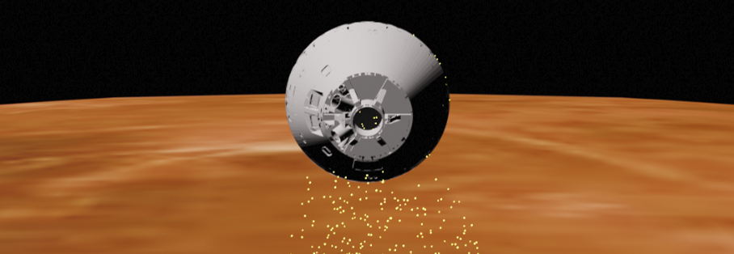
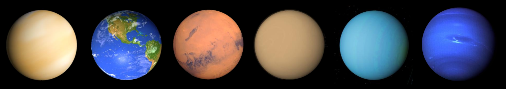

Aerocapture Mission Analysis Tool (AMAT)¶
AMAT is designed to provide rapid mission analysis capability for aerocapture mission concepts to the planetary science community.
See Jupyter notebooks to get started or refer to examples in the GitHub repository.
If you find AMAT useful in your work, please consider citing us: Girija et al., (2021). AMAT: A Python package for rapid conceptual design of aerocapture and atmospheric Entry, Descent, and Landing (EDL) missions in a Jupyter environment. Journal of Open Source Software, 6(67), 3710, DOI 10.21105/joss.03710
AMAT allows the user to peform low-fidelity broad sweep parametric studies; as well as high fidelity Monte Carlo simulations to quantify aerocapture performance. AMAT comes with a suite of interplanetary trajectories, planetary atmosphere models, aeroheating correlations, and guidance algorithms for rapid conceptual mission design. AMAT provides aerocapture and Entry, Descent, Landing (EDL) mission analysis capability for Venus, Earth, Mars, Jupiter, Saturn, Titan, Uranus, and Neptune.
For sub-routine documentation, see Module Index
Contents:
- About AMAT
- Installation
- Capabilities
- Example Jupyter Notebooks
- Example - 01 - Hello World!
- Example - 02 - Atmosphere
- Example - 03 - Venus Aerocapture: Part 1
- Example - 04 - Venus Aerocapture: Part 2
- Example - 05 - Titan Aerocapture: Part 1
- Example - 06 - Titan Aerocapture: Part 2
- Example - 07 - Venus Aerocapture: Part 3
- Example - 08 - Venus Aerocapture: Part 4
- Example - 09 - Uranus Aerocapture
- Example - 10 - Neptune Aerocapture - Part 1
- Example - 11 - Neptune Aerocapture - Part 2a: Monte Carlo Simulations
- Example - 12 - Neptune Aerocapture - Part 2b: Monte Carlo Simulations
- Example - 13 - Venus Aerocapture - Part 5a: Monte Carlo Simulations
- Example - 14 - Fire-II - Earth
- Example - 15 - Apollo-AS-201 - Earth
- Example - 16 - Apollo-AS-202 - Earth
- Example - 17 - Apollo-4 - Earth
- Example - 18 - Apollo-6 - Earth
- Example - 19 - PAET - Earth
- Example - 20 - Viking-1 - Mars
- Example - 21 - Viking-2 - Mars
- Example - 22 - PV Small North - Venus
- Example - 23 - PV Small Night - Venus
- Example - 24 - PV Small Day - Venus
- Example - 25 - PV Large - Venus
- Example - 26 - Galileo - Jupiter
- Example - 27 - OREX - Earth
- Example - 28 - Pathfinder - Mars
- Example - 29 - Mirka - Earth
- Example - 30 - Huygens - Titan
- Example - 31 - Atm. Reentry Demonstrator - Earth
- Example - 32 - Deep Space 2 - Mars
- Example - 33 - Stardust - Earth
- Example - 34 - Genesis - Earth
- Example - 35 - Hayabusa - Earth
- Example - 36 - Beagle-2 - Mars
- Example - 37 - Opportunity - Mars
- Example - 38 - Curiosity - Mars
- Example - 39 - Oceanus - Saturn (Concept)
- Example - 40 - Oceanus - Uranus (Concept)
- Example - 41 - Hera - Saturn (Concept)
- Example - 42 - Dragonfly - Titan (Planned)
- Example - 43 - Ice Giant Pre-Decadal - Uranus Probe (Concept)
- Example - 44 - Ice Giant Pre-Decadal - Neptune Probe (Concept)
- Example - 45 - ADEPT ViTaL - Venus (Concept)
- Example - 46 - Uranus Probe - Decadal Study - 2010 (Concept)
- Example - 47 - Venus Flagship - Decadal Study - 2010 (Concept)
- Example - 48 - Crew Module Atmospheric Re-entry Experiment
- Example - 49 - Earth SmallSat Aerocapture Demonstration - Part 1
- Example - 50 - Earth SmallSat Aerocapture Demonstration - Part 2
- Example - 51 - Mars SmallSat Aerocapture Demonstration - Part 1
- Example - 52 - Mars SmallSat Aerocapture Demonstration - Part 2
- Example - 53 - Mars SmallSat Aerocapture Demonstration - Part 3
- Example - 54 - ExoMars 2016 - Mars
- Example - 55 - Titan Aerocapture Systems Study - Part 1
- Example - 56 - Venus Entry Tradespace - Carpet Plot
- Example - 57 - Dragnofly (Titan) Entry Tradespace - Carpet Plot
- Example - 58 - User-defined CD Mach Function - Earth Re-entry
- Example - 59 - Compute arrival declination from v-inf-vector
- Example - 60 - Compute v_inf and arrival declination from flyby dates (1)
- Example - 61 - Compute v_inf and arrival declination from flyby dates (2)
- Example - 62 - Approach Trajectories for Two Probes at Neptune
- Example - 63 - Locus of approach trajectories for constant inertial EFPA
- Example - 64 - Probe and Orbiter Trajectory
- Example - 65 - Probe-Orbiter Deflection Maneuver
- Example - 66 - Multi-probe Deflection Maneuver
- Example - 67 - Multi-orbiter Deflection Maneuver
- Example - 68 - Launch Vehicle Performance
- Example - 69 - Interplanetary Trade Space - Uranus - Falcon Heavy
- Example - 70 - Interplanetary Trade Space - Uranus - SLS
- Example - 71 - Uranus Arrival, Approach, Entry State
- Example - 72 - Uranus Aerocapture - Part 1
- Example - 73 - Uranus Aerocapture - Part 2
- Example - 74 - Uranus Aerocapture - Part 3
- Example - 75 - Literature Survey Update - May 28, 2022
- Example - 76 - Uranus Aerocapture - Mission Concept Study
- JSR Article Notebooks
- 01 - Literature Survey
- 02 - Interplanetary Trajectories
- 03 - a - Venus - Feasibility Charts - Lift
- 03 - b - Venus - Feasibility Charts - Drag
- 04 - a - Earth - Feasibility Charts - Lift
- 04 - b - Earth - Feasibility Charts - Drag
- 05 - a - Mars - Feasibility Charts - Lift
- 05 - a - Mars - Feasibility Charts - Drag
- 06 - a - Jupiter - Feasibility Charts - Lift
- 06 - a - Jupiter - Feasibility Charts - Drag
- 07 - a - Saturn - Feasibility Charts - Lift
- 07 - b - Saturn - Feasibility Charts - Drag
- 08 - a - Titan - Feasibility Charts - Lift
- 08 - b - Titan - Feasibility Charts - Lift
- 09 - a - Uranus - Feasibility Charts - Lift
- 09 - b - Uranus - Feasibility Charts - Drag
- 10 - a - Neptune - Feasibility Charts - Lift
- 10 - b - Neptune - Feasibility Charts - Drag
- 11 - Mass-Benefit Analysis - Venus
- 12 - Mass-Benefit Analysis - Earth
- 13 - Mass-Benefit Analysis - Mars
- 14 - Mass-Benefit Analysis - Titan
- 15 - Mass-Benefit Analysis - Uranus
- 16 - Mass-Benefit Analysis - Neptune
- 17 - Comparative Studies
- API Reference
- Contributions
- Credits
- References
- Module Index